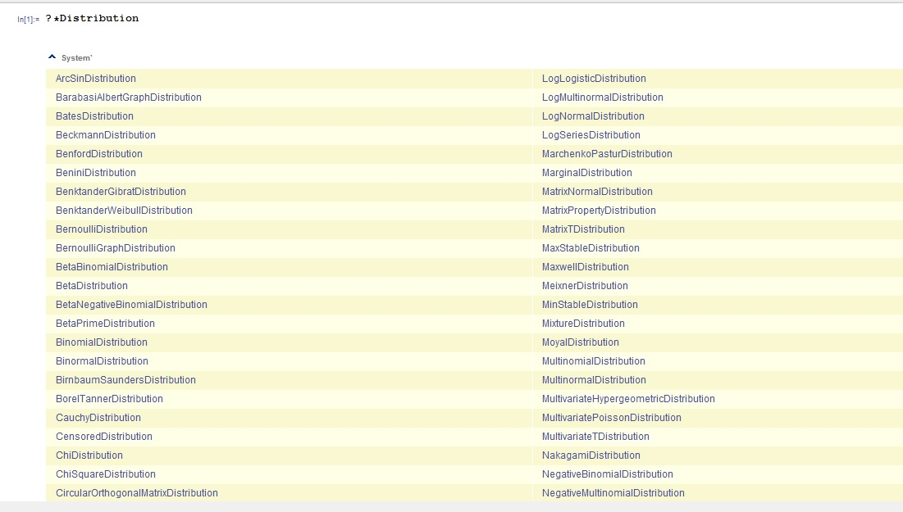
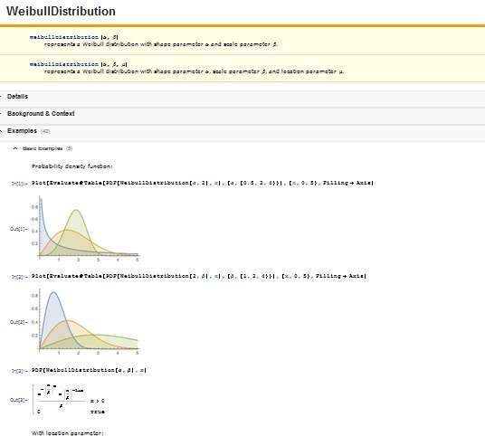

Generelt:
Programmet beskriver langt flere fordelinger enn beskrevet i denne guiden. En sammenlikning mellom samplede datasett og
tilhørende kontinuerlige monovariate fordelingsfunksjoner kan studeres i denne demonstrasjonen:
function destribution demonstrations
En oversikt over alle fordelinger ( både diskrete og kontinuerlige) i Mathematica, kan du få ved å skrive inn:
In[1]:= ?*Distribution

Velg gjerne en, scroll ned og følg pilen for å få full oversikt over den valgte fordelingen du er interresert i.
Eksempel:
Du får lignende oversikt over fordelingen:

Modifiser kommandoer/variabler for å få ønsket resultat.